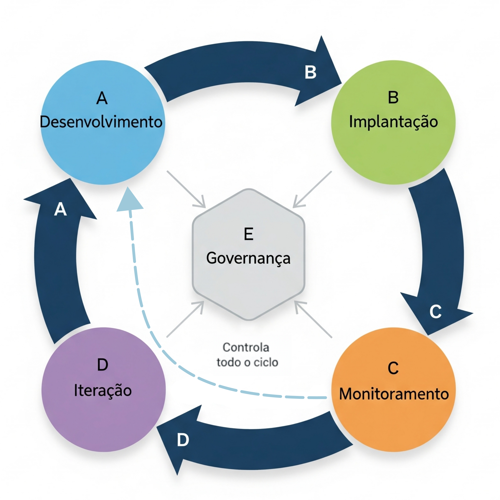

Gerenciamento Operacional de Modelos (MLOps) de Aprendizado de Máquina com R
UFPE
Estrutura da Apresentação
- MLOps: O que é e Por quê?
- Características Chave do MLOps
- Desenvolvimento de Modelos com R
- Preparação para Produção
- Monitoramento e Manutenção
- Governança e Responsabilidade
- Ferramentas e Tecnologias em R
MLOps: O que é e Por quê?
O Desafio: Da Experimentação à Produção
“Mais da metade dos modelos Aprendizagem de Máquina criados pelas organizações hoje nunca chegam à produção.” - Introducing MLOps
Por quê?
MLOps: O que é e Por quê?
O Desafio: Da Experimentação à Produção
- Modelos em Laboratório vs. Realidade: Um modelo que funciona bem em um notebook com dados estáticos pode falhar em um ambiente de produção com dados dinâmicos.
- Complexidade Oculta: O código de ML é apenas uma pequena parte de um sistema de ML real.
Fonte: “Hidden Technical Debt in Machine Learning Systems”, Google (2015)
MLOps: O que é e Por quê?
O Ciclo de Vida de ML: Simples vs. Realista
Atualmente no mercado de trabalho, nomenclaturas estão surgindo para diferenciar as áreas que trabalham com dados. As mais frequentes atualmente são:
- Engenheiro de dados;
- Analista de dados;
- Cientista de Dados;
- Engenheiro de Machine Learning;
- Prompt engineering;
MLOps: O que é e Por quê?
O Ciclo de Vida de ML: Simples vs. Realista
Atualmente no mercado de trabalho, nomenclaturas estão surgindo para diferenciar as áreas que trabalham com dados. As mais frequentes atualmente são:
- Engenheiro de dados;
- Analista de dados;
- Cientista de Dados;
- Engenheiro de Machine Learning;
- Prompt engineering;
MLOps: O que é e Por quê?
O Ciclo de Vida de ML: Simples vs. Realista
Visão Simplista
Visão Realista
MLOps: O que é e Por quê?
O que é MLOps?
MLOps (Machine Learning Operations) é a padronização e otimização do ciclo de vida para modelos de Aprendizado de Máquina.
Existe uma área chamada DevOps (Desenvolvimento + Operações) que surgiu para resolver problemas similares no desenvolvimento de software tradicional.
MLOps = DevOps + Desafios de ML
MLOps: O que é e Por quê?
O que é MLOps?
- Dados em constante mudança (Data Drift): Diferente do código de software, os dados de produção mudam, degradando o modelo.
- Performance do modelo em queda (Concept Drift): A relação entre as variáveis de entrada e saída pode mudar com o tempo.
- Experimentação: O ciclo de vida de ML é inerentemente experimental.
- Equipes multidisciplinares: Envolve cientistas de dados, engenheiros de ML, engenheiros de dados e especialistas de negócio.
MLOps: O que é e Por quê?
Por que MLOps é Essencial?
- Reduzir Riscos: Garante que os modelos em produção se comportem como esperado, evitando prejuízos financeiros ou de reputação.
- Escalabilidade: Permite gerenciar de dezenas a milhares de modelos em produção de forma eficiente.
- Reprodutibilidade e Auditoria: Assegura que cada predição e cada versão do modelo possam ser rastreadas e auditadas.
- Velocidade e Agilidade: Automatiza o processo de re-treinamento e implantação, permitindo que a empresa responda rapidamente às mudanças do mercado.
- Colaboração: Cria uma linguagem e um processo comuns para equipes diferentes.
Características Chave do MLOps
Os 5 Pilares do MLOps
O ciclo de vida de MLOps pode ser dividido em cinco componentes principais, que formam um ciclo contínuo.

Características Chave do MLOps
1 - Desenvolvimento (Development)
- Objetivo de Negócio: Começa com a definição clara do problema a ser resolvido.
- Análise de Dados: Exploração, limpeza e preparação dos dados.
- Engenharia de Features: Criação de variáveis preditivas.
- Treinamento e Avaliação: Experimentação com diferentes algoritmos e hiperparâmetros.
- Reprodutibilidade: Versionamento de dados, features e código para garantir que os experimentos possam ser recriados.
Características Chave do MLOps
2 - Implantação (Deployment)
- “Empacotamento” do Modelo: Transformar o modelo treinado (ex: um arquivo
.rdsem R) em um artefato implantável. - Infraestrutura: Decidir onde o modelo será executado (servidor, nuvem, containers).
- Estratégias de Implantação:
- Batch Scoring: Processamento em lote (ex: rodar uma vez por dia).
- Real-Time Scoring: Predições em tempo real através de uma API.
- Blue-Green, Canary Releases: Estratégias para implantar novas versões com segurança.
Características Chave do MLOps
3 - Monitoramento (Monitoring)
- Monitoramento de Infraestrutura (DevOps): O serviço está no ar? Qual o consumo de CPU/memória?
- Monitoramento do Modelo (MLOps):
- Data Drift: Os dados de entrada mudaram? (ex: a média de idade dos clientes aumentou).
- Concept Drift: A performance do modelo (acurácia, AUC) está caindo?
- Qualidade das Predições: As predições ainda fazem sentido para o negócio?
Características Chave do MLOps
4 - Iteração (Iteration)
- O Loop de Feedback: As informações do monitoramento alimentam o ciclo de volta ao desenvolvimento.
- Retreinamento: Automatizar o processo de retreinar o modelo com novos dados quando a performance cai.
- Testes A/B: Comparar a performance de um novo modelo (Challenger) com o modelo atual em produção (Champion).
- Melhoria Contínua: O objetivo não é apenas manter, mas melhorar a performance dos modelos.
Características Chave do MLOps
5 - Governança (Governance)
- Controle e Conformidade: Garantir que os modelos sigam regulações (como LGPD) e políticas internas.
- Responsabilidade: Lidar com vieses (bias), garantir justiça (fairness) e explicabilidade (explainability).
- Segurança: Proteger os modelos contra ataques e vazamento de dados.
- Auditoria: Manter um registro completo de quem fez o quê, quando e por quê em todo o ciclo de vida.
Desenvolvimento de Modelos com R
Desenvolvimento de Modelos com R
O Ecossistema tidymodels
tidymodelsé um conjunto de pacotesRpara modelagem que compartilham uma filosofia de design, gramática e estruturas de dados consistentes.Os pacotes desse ecossistema nos ajuda a seguir as melhores práticas desde o início.

Desenvolvimento de Modelos com R
Estrutura do tidymodels para MLOps
rsample: Para divisão de dados (treino/validação/teste) e processo de reamostragem e validação cruzada.recipes: Para pré-processamento dos dados de forma reprodutível. Uma estrutura criada com funções dorecipespode ser aplicada consistentemente a novos dados.parsnip: Uma interface auxilia na criação do pipeline e é possível utilizar diferentes pacotes que possuem métodos.tune: Para otimização de hiperparâmetros.yardstick: Para avaliar a performance do modelo com métricas padronizadas.workflows: Para juntar os procesos anteriores e criação de um pipeline completo, simplificando o processo.
Desenvolvimento de Modelos com R
Exemplo: Um Workflow Reprodutível
# 1. Dividir os dados
set.seed(123)
data_split <- initial_split(meus_dados, prop = 0.8)
train_data <- training(data_split)
test_data <- testing(data_split)
# 2. Criar a receita de pré-processamento
minha_receita <- recipe(target ~ ., data = train_data) |>
step_impute_median(all_numeric_predictors()) |>
step_normalize(all_predictors())
# 3. Especificar o modelo
rf_model <- rand_forest(trees = 100) |>
set_engine("ranger") |>
set_mode("classification")
# 4. Criar o workflow
meu_workflow <- workflow() |>
add_recipe(minha_receita) |>
add_model(rf_model)
# 5. Treinar o modelo
modelo_final <- meu_workflow |> fit(data = train_data)Benefício MLOps: O objeto modelo_final contém tanto o pré-processamento quanto o modelo. Ele pode ser salvo e aplicado a novos dados de forma consistente.
Desenvolvimento de Modelos com R
Versionamento: renv
Problema: Seu modelo funciona hoje, mas daqui a 6 meses, após atualizar o R ou os pacotes, ele pode quebrar, para de funcionar por mudanças na linguagem de programação e pacotes, ou começar a gerar resultados diferentes.
A solução: O pacote renv cria uma biblioteca de pacotes isolada e específica para o seu projeto.
renv::init(): Inicia um novo ambiente.renv::snapshot(): Salva o estado atual dos pacotes em um arquivorenv.lock.renv::restore(): Restaura a biblioteca de pacotes a partir dorenv.lock.
Isso garante reprodutibilidade computacional, um pilar do MLOps. Combine o renv.lock com o Git para ter um histórico completo do seu ambiente.
Preparação para Produção
O que é um “Modelo em Produção”?
Modelo em Produção: É um modelo que está ativamente fazendo predições em dados reais para suportar uma decisão de negócio.
Isso pode significar:
- Uma API REST: Um serviço web que recebe dados e retorna uma predição.
- Um Job em Batch: Um script que roda periodicamente (ex: toda noite) para pontuar uma base de clientes.
- Embarcado em uma Aplicação: O modelo roda dentro de um aplicativo Shiny ou de outro sistema.
Preparação para Produção
De um Objeto R para um Artefato de Produção
O desafio: Como pegar o
modelo_finalque criamos no R e torná-lo disponível para outros sistemas?
2. Criar uma API com plumber: plumber transforma funções R em endpoints de uma API web com poucas linhas de código.
Preparação para Produção
vetiver: Um Framework MLOps para R
O pacote
vetiverfoi criado para simplificar o MLOps em R.vetiverabstrai muitos passos, como criar o endpoint, documentar a API (com OpenAPI/Swagger) e verificar os tipos de dados de entrada.
library(vetiver)
# 1. Crie um "objeto de modelo" vetiver
v <- vetiver_model(modelo_final, "meu_modelo_rf")
# 2. Versione o modelo em um "board" (ex: uma pasta, S3, etc)
library(pins)
board <- board_folder("model_versions")
vetiver_pin_write(board, v)
# 3. Crie uma API plumber a partir do objeto vetiver
pr() %>%
vetiver_api(v) %>%
pr_run()Preparação para Produção
vetiver: Um Framework MLOps para R

Fonte: https://vetiver.posit.co/
Preparação para Produção
Containerização com Docker
Para garantir que a API rode em qualquer lugar, podemos “empacotá-la” em um container Docker.
Nesse caso precisamos de um aquivo chamado Dockerfile que descreve o ambiente.
# Usar uma imagem base com R e plumber
FROM rstudio/plumber
# Instalar dependências do sistema
RUN apt-get update && apt-get install -y ...
# Copiar o ambiente renv
COPY renv.lock .
COPY renv/ .
RUN R -e "renv::restore()"
# Copiar a API e o modelo
COPY api.R .
COPY modelo_final.rds .
# Expor a porta e rodar a API
EXPOSE 8000
ENTRYPOINT ["R", "-e", "pr <- plumber::plumb('api.R'); pr$run(host='0.0.0.0', port=8000)"]Isso cria um ambiente isolado e 100% reprodutível para o nosso modelo.
Monitoramento e Manutenção
Por que os Modelos Degradam?
- Data Drift (Mudança nos Dados): A distribuição dos dados de entrada muda.
- Exemplo: Um modelo de crédito treinado antes de uma crise econômica receberá perfis de clientes muito diferentes durante a crise.
- Concept Drift (Mudança no Conceito): A relação entre as features e o alvo muda.
- Exemplo: Em um modelo de churn, as razões pelas quais os clientes cancelam um serviço podem mudar devido a um novo concorrente no mercado.
- Problemas de Engenharia: Erros no pipeline de dados, dados faltantes, etc.
Monitoramento e Manutenção
Estratégias de Monitoramento
1. Logging: Cada predição feita pela sua API deve ser registrada. O que logar?
- Timestamp: Quando a predição foi feita.
- ID do Modelo: Qual versão do modelo foi usada.
- Features de Entrada: Os dados que o modelo recebeu.
- Predição de Saída: O resultado do modelo.
- (Opcional) Ground Truth: O resultado real, quando ele se torna disponível.
2. Dashboards de Monitoramento: Use ferramentas como Shiny ou R Markdown para criar dashboards que visualizam as métricas do modelo ao longo do tempo.
Monitoramento e Manutenção
Métricas de Monitoramento
Métricas de Performance do Modelo
(Requerem Ground Truth)
- Acurácia
- AUC
- Kappa
- Erro médio (para regressão)
- Compare a performance atual com a performance na validação.
Métricas de Drift de Dados
(Não requerem Ground Truth)
- Distribuição das variáveis (histogramas, boxplots).
- Estatísticas descritivas (média, mediana, desvio padrão).
- Percentual de valores faltantes.
- Compare a distribuição dos dados de produção com a dos dados de treino.
Monitoramento e Manutenção
Automação do Retreinamento
Quando o monitoramento detecta uma queda de performance, o retreinamento pode ser necessário.
Estratégias:
- Manual: Um Estatístico/Cientista de dados é alertado, analisa o problema e decide retreinar.
- Agendado: Retreinar o modelo periodicamente (ex: toda semana) com os dados mais recentes.
- Baseado em Gatilho (Trigger-based): Um script de automação (ex: GitHub Actions) inicia o retreinamento automaticamente quando uma métrica (ex: acurácia) cai abaixo de um limiar.
Validação do Novo Modelo: O modelo retreinado deve sempre ser comparado ao modelo antigo em um conjunto de dados de validação. Ele só vai para produção se for melhor.
Governança e IA Responsável
O que é IA Responsável (Responsible AI)?
É a prática de projetar, desenvolver e implantar sistemas de IA, modelos de Aprendizado de Máquina de forma segura, confiável e ética.
Pilares Principais:
- Justiça (Fairness) e Viés (Bias): O modelo trata diferentes grupos demográficos de forma justa?
- Explicab. ou Interpretab.: Conseguimos entender o motivo da predição do modelo?
- Privacidade e Segurança: Os dados dos usuários estão protegidos?
- Prestação de Contas (Accountability): Quem é responsável pelos erros de predição do modelo?
- Confiabilidade (Reliability): O modelo é robusto e se comporta de maneira previsível?
Governança e IA Responsável
Bias (Viés) em Modelos de AM
“Bias in, bias out.”
Se os dados de treinamento refletem vieses históricos da sociedade, o modelo aprenderá e amplificará esses vieses.
Exemplos:
- Um modelo de recrutamento treinado em dados históricos de uma empresa dominada por homens pode aprender a penalizar currículos de mulheres.
- Um modelo de reconhecimento facial que funciona mal para tons de pele mais escuros por ter sido treinado majoritariamente com rostos de pessoas brancas.
Governança e IA Responsável
Ferramentas para IA Responsável em R
fairnessefairmodels: Pacotes para auditar e mitigar vieses em modelos de classificação. Eles ajudam a medir se o seu modelo tem performance diferente para diferentes grupos (ex: por gênero, etnia).
DALEX(Descriptive Machine Learning Explanations): Um pacote para explicabilidade. Permite entender como as variáveis influenciam as predições.- Feature Importance: Quais variáveis são mais importantes?
- Partial Dependence Plots: Como a predição muda ao variar uma feature?
lime: Para explicações locais (por que esta predição específica foi feita?).
ExplaineR: Para utilização do SHAP (SHapley Additive exPlanations), um outro método para explicabilidade.
Governança e IA Responsável
Documentação do Modelo
Uma parte crucial da governança é documentar seus modelos. O que documentar?
- Objetivo do Modelo: Qual problema de negócio ele resolve?
- Dados Utilizados: Fonte, descrição das features, período.
- Metodologia: Algoritmo, pré-processamento, métricas de avaliação.
- Resultados de Validação: Performance em diferentes segmentos.
- Considerações Éticas: Análise de bias, limitações do modelo.
vetiverajuda a gerar automaticamente parte dessa documentação, como as features de entrada esperadas.
Ferramentas e Tecnologias
Orquestração com CI/CD
CI/CD (Continuous Integration / Continuous Deployment) é a automação de todo o fluxo.
GitHub Actions é uma ferramenta popular para isso. Podemos criar um workflow que:
- Gatilho (Trigger): É ativado quando novos dados chegam ou por agendamento.
- Checkout: Baixa o código do projeto do Git.
- Setup R: Instala o R e restaura os pacotes com
renv. - Retreinar Modelo: Roda um script R que treina o modelo com os novos dados.
- Avaliar Modelo: Compara o novo modelo com o antigo.
- Deploy (Condicional): Se o novo modelo for melhor:
- Salva o novo artefato do modelo com
vetiver/pins. - Constrói uma nova imagem Docker.
- Implanta a nova imagem em um serviço de nuvem (AWS, Azure, Google Cloud).
- Salva o novo artefato do modelo com
Ferramentas e Tecnologias
Exemplo de Workflow no GitHub Actions
# .github/workflows/retrain-model.yml
name: Retrain and Deploy Model
on:
schedule:
- cron: '0 0 * * 1' # Toda segunda-feira à meia-noite
jobs:
retrain:
runs-on: ubuntu-latest
steps:
- uses: actions/checkout@v3
- uses: r-lib/actions/setup-r@v2
- uses: r-lib/actions/setup-renv@v2
- name: Retrain Model
run: Rscript -e "source('scripts/retrain.R')"
- name: Deploy if better
# Script que compara modelos e faz o deploy
run: Rscript -e "source('scripts/deploy.R')" Conclusão
- MLOps não é uma ferramenta, é uma cultura: Combina pessoas, processos e tecnologia para entregar valor com Aprendizado de Máquina de forma sustentável.
- O ciclo de vida é iterativo: Desenvolvimento, implantação e monitoramento formam um loop contínuo de melhoria.
- O R possui um ecossistema maduro para MLOps: Ferramentas como
tidymodels,renv,plumber,vetivereshinycobrem todo o ciclo de vida.
- Comece pequeno, mas comece certo: Incorpore boas práticas como versionamento de código e ambiente (
Git+renv) desde o início. Automatize gradualmente.
- IA Responsável é inegociável: A governança, o controle de viés e a explicabilidade são essenciais para construir confiança e evitar riscos.
Referências
Treveil, Mark, et al. Introducing MLOps. O’Reilly Media, 2020.
Sculley, David, et al. “Hidden technical debt in machine learning systems.” Advances in neural information processing systems 28 (2015).
Kuhn, Max, and Julia Silge. Tidy modeling with R: A framework for modeling in the tidyverse. ” O’Reilly Media, Inc.”, 2022.
Wisniewski, Jakub, and Przemyslaw Biecek. “fairmodels: a Flexible Tool for Bias Detection, Visualization, and Mitigation in Binary Classification Models.” R J. 14.1 (2022): 227-243.
vetiver - https://github.com/rstudio/vetiver-r
OBRIGADO!
Slide produzido com quarto
Contato:
Lattes: http://lattes.cnpq.br/4617170601890026
LinkedIn: jodavidferreira
Site Pessoal: https://jodavid.github.io/
e-mail: jodavid.ferreira@ufpe.br

Gerenciamento Operacional de Modelos (MLOps) de Aprendizado de Máquina com R - Jodavid Ferreira